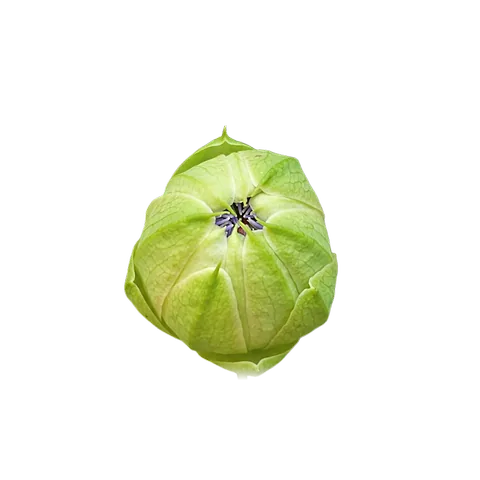
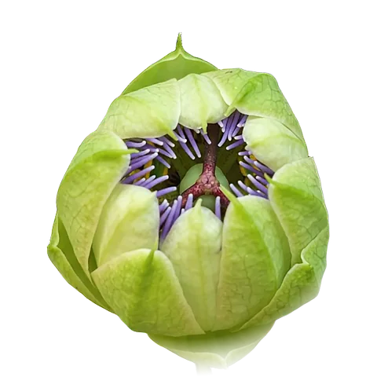
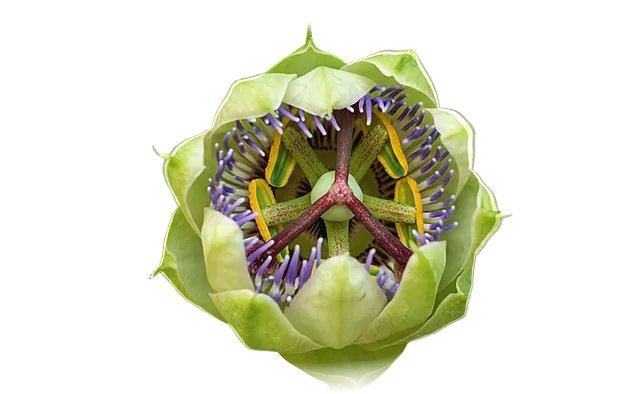
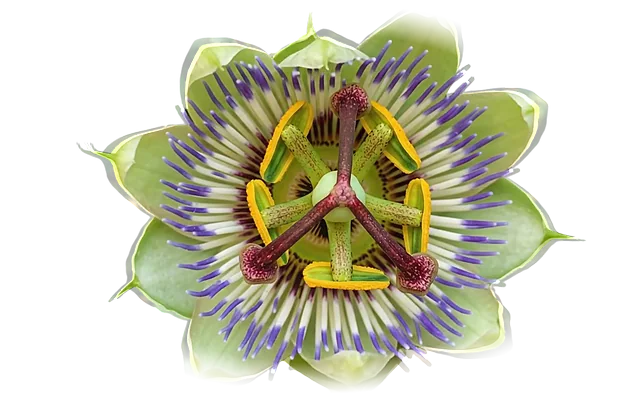
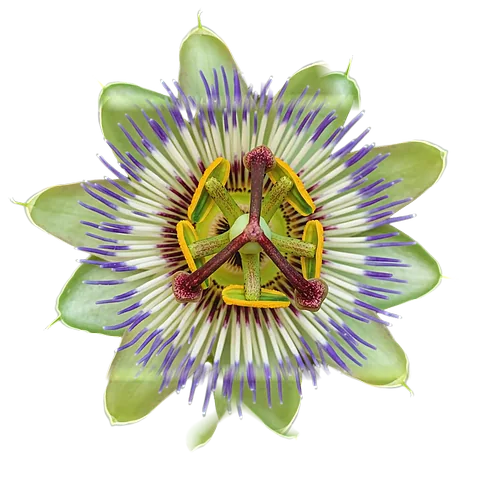

Deine Website: Leistungsübersicht
Für Katharina · Stand 29. Oktober 2026
Für Katharina · Stand 29. Oktober 2026
Auf einen Blick
Was die Website kann

›
›
›
›
Technik: Video 1280 × 720 px · je Bild 880 × 880 px (Computer) und 480 × 480 px (Handy) · auf einer Zeichenfläche gesteuert
Technik: Vorschaubilder 640 px hoch (ca. 1,8 MB statt 4,7 MB), große Fassung lädt erst beim Öffnen
Arbeitszeit
| Bereich | Stunden |
|---|---|
| Konzept, Beratung und Abstimmung | 4 |
| Design und Aufbau der Seiten | 7 |
| Navigation, Animationen, Galerie | 9 |
| Passionsblume und Bildbearbeitung | 5 |
| Texte einarbeiten und Korrekturrunden | 5 |
| Gesamt | ca. 30 |
Was so eine Website üblicherweise kostet
Grundlage: individuell gestaltete Website mit eigenen Animationen, ohne Baukasten. Dafür rechnet man üblicherweise 90 bis 130 Stunden bei 60 bis 120 € pro Stunde.
Zusammensetzung
| Leistung | Betrag |
|---|---|
| Website: Konzeption, Gestaltung, Programmierung, Hosting, eine Überarbeitungsrunde | 900 € |
| Erweiterung: Reise durch das Medizinrad, Passionsblume, Seite „Über mich“, Bildbearbeitung | 550 € |
| Endfassung: alle Textkorrekturen, Seiten „Kreative Integration“ und „Lebensspuren“, Mesa, Feinschliff | 450 € |
| Gesamt | 1.900 € |
für ca. 30 Stunden Arbeit, das sind rund 63 € pro Stunde
Nachbesserungen an der Endfassung sind darin enthalten.
Danke für dein Vertrauen und die schöne Zusammenarbeit.
Kebron